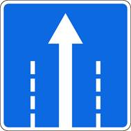

8. Начало движения, маневрирование
изменения от 8 апреля 2020
8.1. Перед началом движения, перестроением, поворотом (разворотом) и остановкой водитель обязан подавать сигналы световыми указателями поворота соответствующего направления, а если они отсутствуют или неисправны - рукой. При выполнении маневра не должны создаваться опасность для движения, а также помехи другим участникам дорожного движения.
Сигналу левого поворота (разворота) соответствует вытянутая в сторону левая рука либо правая, вытянутая в сторону и согнутая в локте под прямым углом вверх. Сигналу правого поворота соответствует вытянутая в сторону правая рука либо левая, вытянутая в сторону и согнутая в локте под прямым углом вверх. Сигнал торможения подается поднятой вверх левой или правой рукой.
8.2. Подача сигнала указателями поворота или рукой должна производиться заблаговременно до начала выполнения маневра и прекращаться немедленно после его завершения (подача сигнала рукой может быть закончена непосредственно перед выполнением маневра). При этом сигнал не должен вводить в заблуждение других участников движения.
Подача сигнала не дает водителю преимущества и не освобождает его от принятия мер предосторожности.
8.3. При выезде на дорогу с прилегающей территории водитель должен уступить дорогу транспортным средствам и пешеходам, движущимся по ней, а при съезде с дороги - пешеходам и велосипедистам, путь движения которых он пересекает.
8.4. При перестроении водитель должен уступить дорогу транспортным средствам, движущимся попутно без изменения направления движения. При одновременном перестроении транспортных средств, движущихся попутно, водитель должен уступить дорогу транспортному средству, находящемуся справа.
8.5. Перед поворотом направо, налево или разворотом водитель обязан заблаговременно занять соответствующее крайнее положение на проезжей части, предназначенной для движения в данном направлении, кроме случаев, когда совершается поворот при въезде на перекресток, где организовано круговое движение.
При наличии слева трамвайных путей попутного направления, расположенных на одном уровне с проезжей частью, поворот налево и разворот должны выполняться с них, если знаками 5.15.1 или 5.15.2 либо разметкой 1.18 не предписан иной порядок движения. При этом не должно создаваться помех трамваю.
Знак 5.15.1

Знак 5.15.2
Разметка 1.18
8.6. Поворот должен осуществляться таким образом, чтобы при выезде с пересечения проезжих частей транспортное средство не оказалось на стороне встречного движения.
При повороте направо транспортное средство должно двигаться по возможности ближе к правому краю проезжей части.
8.7. Если транспортное средство из-за своих габаритов или по другим причинам не может выполнить поворот с соблюдением требований пункта 8.5 Правил, допускается отступать от них при условии обеспечения безопасности движения и если это не создаст помех другим транспортным средствам.
8.8. При повороте налево или развороте вне перекрестка водитель безрельсового транспортного средства обязан уступить дорогу встречным транспортным средствам и трамваю попутного направления.
Если при развороте вне перекрестка ширина проезжей части недостаточна для выполнения маневра из крайнего левого положения, его допускается производить от правого края проезжей части (с правой обочины). При этом водитель должен уступить дорогу попутным и встречным транспортным средствам.
8.9. В случаях, когда траектории движения транспортных средств пересекаются, а очередность проезда не оговорена Правилами, дорогу должен уступить водитель, к которому транспортное средство приближается справа.
8.10. При наличии полосы торможения водитель, намеревающийся повернуть, должен своевременно перестроиться на эту полосу и снижать скорость только на ней.
При наличии в месте въезда на дорогу полосы разгона водитель должен двигаться по ней и перестраиваться на соседнюю полосу, уступая дорогу транспортным средствам, движущимся по этой дороге.
8.11. Разворот запрещается:
· на пешеходных переходах;
· в тоннелях;
· на мостах, путепроводах, эстакадах и под ними;
· на железнодорожных переездах;
· в местах с видимостью дороги хотя бы в одном направлении менее 100 м;
· в местах остановок маршрутных транспортных средств.
8.12. Движение транспортного средства задним ходом разрешается при условии, что этот маневр будет безопасен и не создаст помех другим участникам движения. При необходимости водитель должен прибегнуть к помощи других лиц.
Движение задним ходом запрещается на перекрестках и в местах, где запрещен разворот согласно пункту 8.11 Правил.